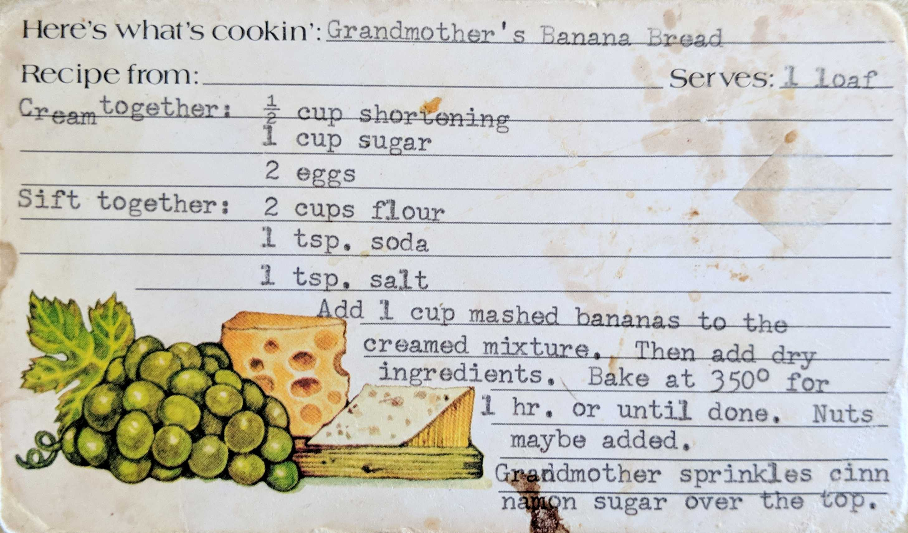

Grandmother's Banana Bread
Serves 1 loaf
Cream together: 1/2 cup shortening
1 cup sugar
2 eggs
Sift together: 2 cups flour
1 tsp. soda
1 tsp. salt
Add 1 cup mashed bananas to the creamed mixture. Then add dry ingredients. Bake at 350° for
1 hr. or until done. Nuts maybe added. Grandmother sprinkles cinnamon sugar over the top.